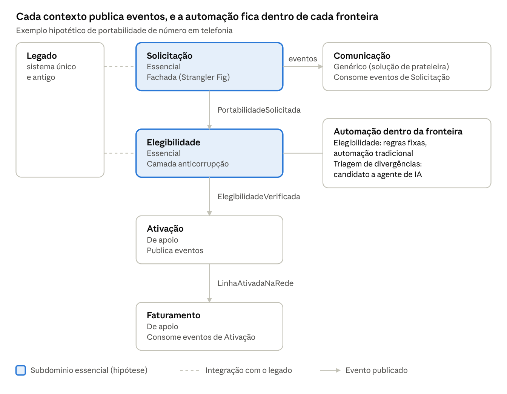

O que é o DDD
O Domain-Driven Design foi sistematizado por Eric Evans no livro Domain-Driven Design: Tackling Complexity in the Heart of Software, publicado pela Addison-Wesley em 20 de agosto de 2003. A tese é que o modelo do domínio deve ser o centro do desenho do software. Em vez de começar por tabelas, telas ou serviços, começa-se por entender como o negócio funciona e por representar esse entendimento no código.
Duas ideias sustentam o resto. A primeira é a linguagem ubíqua: um vocabulário comum entre desenvolvedores e especialistas de negócio, usado nas conversas, nos documentos e no código. A aula da PosTech FIAP que usei como material de apoio dá um exemplo bancário: “transferência”, “TED” e “agendamento” não são sinônimos, cada termo representa um processo distinto, e isso precisa estar claro para todos. A segunda ideia é o desenho dirigido pelo modelo, que liga o modelo à implementação e o refatora junto com o código. O livro traz ainda blocos de construção táticos — entidades, objetos de valor, serviços, agregados e repositórios — e o desenho estratégico, que organiza sistemas grandes por contextos delimitados, mapas de contexto e destilação do domínio central.
A mesma aula organiza o DDD em duas partes. O DDD estratégico ajuda a entender o domínio, alinhar o time técnico e os stakeholders e tomar decisões de arquitetura baseadas na estratégia do negócio. O DDD tático foca em padrões que fazem o código representar fielmente o negócio, na linguagem dos especialistas da área. O diagnóstico que justifica o esforço também vem dela: muitos sistemas não falham por bugs ou limitações técnicas, e sim por mal-entendidos. A área de negócio acha que explicou, a tecnologia acha que entendeu e o cliente acha que vai receber algo diferente.
No plano tático, a aula descreve uma divisão em camadas com as dependências voltadas para o núcleo. O domínio fica no centro, com as regras de negócio e sem detalhes técnicos como conexão com banco de dados. A aplicação coordena os casos de uso, carrega e salva agregados e dispara eventos de domínio. A infraestrutura cuida do mundo externo (bancos, mensageria, e-mail, APIs externas) e implementa as interfaces definidas no domínio. A interface com o usuário traduz ações externas em comandos. A própria aula ressalva que não existe uma única forma correta de estruturar uma aplicação.
É a parte estratégica que mais interessa à modernização. Ela não diz como escrever uma classe; diz como dividir um sistema grande em partes que façam sentido para o negócio.
A pergunta deixa de ser “como substituir o sistema antigo?” e passa a ser “quais capacidades do negócio podemos separar, e em que ordem?”.
Onde cortar: subdomínios e contextos delimitados
O guia da AWS para decompor monolitos por subdomínio parte do modelo de domínio e o divide em subdomínios, construindo um microsserviço em torno do contexto delimitado de cada um. Os subdomínios são classificados em três tipos: o essencial, que é o diferencial do negócio; o de apoio; e o genérico, que muitas vezes pode ser uma solução de prateleira. No exemplo do guia, uma seguradora tem Compras e Sinistros como núcleo de Vendas, enquanto Campanhas, Análises e Relatórios apoiam o Marketing.
A classificação importa porque orienta o investimento. O que é essencial merece desenho cuidadoso e equipe própria; o genérico é candidato a compra, não a construção. Mas o guia também aponta os limites da técnica: ela funciona melhor quando o monolito já tem módulos com fronteiras bem definidas, que dá para reempacotar sem reescrita relevante. E há dois riscos explícitos: serviços demais, que complicam a descoberta e a integração, e a dificuldade de identificar os subdomínios, que exige conhecimento profundo do negócio.
Essa segunda dificuldade é a mais subestimada. Nenhuma ferramenta descobre os subdomínios sozinha; quem sabe onde o negócio muda de vocabulário e de regra são as pessoas que o operam.
A aula corrige um erro comum nesse ponto: achar que só dá para usar DDD começando um sistema do zero. Segundo o material, vários projetos começam a aplicar os conceitos justamente na refatoração ou reestruturação de sistemas existentes, e o segredo é começar pequeno, identificando as partes em que o domínio está mal representado e criando modelos novos mais alinhados à realidade. Como ponto de partida, ela sugere mapear as dores com o time de negócio: quais funcionalidades geram mais retrabalho, quais termos são mal compreendidos e quais regras mudam o tempo todo. As respostas ajudam a delimitar os primeiros contextos.
Migrar sem parar a operação: Strangler Fig e camada anticorrupção
Saber onde cortar é metade do trabalho. A outra metade é migrar sem parar o que já funciona. Duas técnicas aparecem de forma recorrente nas fontes, e uma delas vem diretamente do DDD.
| Técnica | Para que serve | Limite típico |
|---|---|---|
| Decomposição por subdomínio | Definir os cortes: um serviço por contexto delimitado, classificado como essencial, de apoio ou genérico. | Exige módulos já razoavelmente separados e conhecimento profundo do negócio; pode gerar serviços demais. |
| Strangler Fig | Construir funcionalidades novas ao lado do legado e mover o comportamento aos poucos, com uma fachada roteando as requisições. | Não se aplica bem quando não é possível interceptar as requisições, quando não há acesso ao código do legado ou quando o sistema é pequeno. |
| Camada anticorrupção | Traduzir entre o modelo do sistema novo e o do legado, para que o novo não herde esquemas e protocolos antigos. | Adiciona latência e mais um serviço para operar, e pode virar ponto único de falha. |
| Event Storming | Descobrir o domínio em oficina, com eventos, comandos, agregados e pontos críticos numa linha do tempo. | Produz um modelo visual de partida, que se descarta e refaz se preciso; não substitui a validação com o negócio. |
Strangler Fig: a figueira que cresce ao redor do legado
O nome vem das figueiras-estranguladoras que Martin Fowler viu em 2001, na Austrália: elas crescem ao redor de uma árvore hospedeira até substituí-la. Na versão de software, constroem-se funcionalidades novas ao lado do legado e movem-se partes do comportamento uma a uma, com uma arquitetura de transição enquanto os dois sistemas convivem. A versão descrita pela Microsoft coloca uma fachada entre o cliente e os sistemas. Ela roteia cada requisição para o legado ou para os novos serviços e transfere mais tráfego a cada iteração, até a desativação do legado.
O banco de dados é a parte mais delicada. Para bases compartilhadas, a descrição da Microsoft prevê extrair um domínio por vez para um banco próprio, com carga histórica por ETL e sincronização por captura de mudanças. E há um alerta que vale repetir: depois que as tabelas saem do monolito, voltar atrás fica caro e arriscado.
Camada anticorrupção: tradução, não regra de negócio
A camada anticorrupção vem do DDD, de Evans, como a própria documentação da Microsoft informa. É uma fachada ou adaptador entre subsistemas de semânticas diferentes, para que o sistema novo fale com o legado usando o seu próprio modelo. Os custos são reais: latência, mais um serviço para operar e o risco de virar ponto único de falha. Por isso a recomendação da fonte é mantê-la só como tradução, sem regras de negócio nem orquestração. Se a camada começa a decidir, ela vira um novo legado no meio do caminho. Combinando isso com a divisão em camadas descrita na aula, uma leitura natural é que a tradução do legado fique do lado da infraestrutura, longe do domínio. Essa ligação é minha, e não vem das fontes.
Descobrir o domínio com Event Storming
Event Storming é uma oficina criada por Alberto Brandolini. Especialistas, pessoas com perguntas e um facilitador colam eventos de domínio numa linha do tempo e, a partir deles, identificam comandos, agregados, reações e pontos críticos (hotspots). A saída é um modelo visual que expõe suposições e conceitos que faltavam, e que pode ser descartado e refeito sem cerimônia.
Para modernização, o valor está nos pontos críticos. Eles mostram onde o conhecimento está só na cabeça de algumas pessoas, e onde o legado esconde regras que ninguém mais documentou. É ali que a migração tende a falhar se for feita só a partir do código.
Os elementos do mural
A aula descreve a oficina como uma dinâmica visual e colaborativa: com post-its coloridos, uma parede e um facilitador, o time inteiro mapeia o funcionamento real do negócio antes de qualquer linha de código. O ponto central é o evento, um fato que aconteceu e não pode ser desfeito, como “Pedido criado” ou “Pagamento aprovado”. Em vez de começar por telas, entidades ou APIs, começa-se pelo que de fato acontece no negócio, numa linguagem simples que dispensa diagramas como o UML e que quem não é de TI também entende. Cada tipo de elemento ganha uma cor:
| Elemento (cor do post-it) | O que representa | Exemplo da aula |
|---|---|---|
| Evento de domínio (laranja) | Algo importante que aconteceu no passado, sempre escrito no passado. | “Pedido Confirmado”, “Pagamento Aprovado”. |
| Comando (azul) | Intenção de ação, iniciada por um ator; quando processado com sucesso, gera eventos. | “Confirmar Pedido”. |
| Agregado (amarelo) | Processa os comandos e guarda as regras de negócio que mantêm tudo consistente. | Pedido, pagamento, entrega. |
| Visualização ou read model (verde) | Organiza dados para consulta, sem regras de negócio. | Lista de pedidos, extrato de transações. |
| Política ou processo (lilás) | Reação automática a um evento, que dispara um comando. | Ao receber “Pagamento Recebido”, mandar “Emitir Nota Fiscal”. |
| Ator (rosa) | Quem interage com o sistema, humano ou outro sistema. | Usuários e sistemas externos. |
As cores seguem o texto da aula; as figuras do próprio material usam algumas cores um pouco diferentes, então vale combinar a legenda com o time antes da sessão. Os elementos se encadeiam: o ator dispara um comando, que é tratado por um agregado e gera um evento. O evento pode atualizar uma visualização ou disparar uma política que cria outro comando, e o ciclo continua.
De agregados a contextos
Ao agrupar os post-its pelos substantivos centrais da operação (um pedido, um pagamento, uma entrega), enxerga-se quais entidades os eventos afetam. Segundo a aula, esse agrupamento serve de base para decisões de arquitetura: em microsserviços, cada contexto delimitado tende a virar um ou mais serviços autônomos. No exemplo simples do material, os limites seguem diretamente os agregados, mas em aplicações mais robustas um contexto pode conter vários agregados, e um mesmo agregado pode se relacionar com limites diferentes. Por isso vale entender bem esses recortes desde o início.
Um caso reportado: Capital One
A aula cita a Capital One, instituição financeira norte-americana, que aplicou Event Storming na transição de uma arquitetura monolítica para microsserviços. Ao mapear eventos de domínio e identificar agregados e contextos delimitados, a empresa decompôs sistemas complexos em serviços independentes, e a abordagem facilitou identificar capacidades de negócio e definir limites claros entre os serviços. O material atribui ao resultado uma arquitetura mais escalável e alinhada ao domínio. É um relato de segunda mão, sem números: não abri o texto original do caso, intitulado Event storming—Kick-start your microservices architecture.
DDD e automação: do caso Michelin aos agentes
O DDD também conversa com a automação de processos. O caso mais próximo nas fontes é o da Michelin, publicado pela The Open Group com o título It All Starts with the Domain Boundaries. O processo de pedido ao recebimento (order-to-cash) rodava num monolito em mainframe. A empresa migrou para soluções especializadas de captura de pedidos, otimização de transporte e entrega logística e, para coordená-las, montou um orquestrador central de BPM, mantido por uma equipe própria porque a equipe das aplicações tinha perdido o conhecimento das regras de negócio. Segundo o texto, depois de alguns anos o orquestrador trouxe problemas, que a fonte não detalha.
A equipe então analisou como a informação mudava de granularidade e de vocabulário ao longo do processo e chegou a três subdomínios: Pedidos de Clientes, Entregas e Faturas. Para cada dependência, identificou qual subdomínio é o de origem e escolheu um padrão de integração, usando quatro de nove possíveis: Conformist, Anticorruption Layer, Open Host Service e Event Published. O Event Storming identificou os eventos de negócio, e a arquitetura foi repensada em torno de eventos e coreografia, sem orquestrador central. A fonte não informa resultados medidos.
linguagem
Vocabulário único por contexto, registrado em glossário e usado no código.
fronteira
Subdomínios definem onde termina cada responsabilidade e cada automação.
integração
Cada dependência recebe um padrão explícito: conformista, camada anticorrupção, serviço aberto ou evento.
migração
Fachada na frente, uma fatia por vez, começando pelo contexto de menor risco.
A principal lição arquitetural é que as fronteiras do domínio devem orientar também as fronteiras de integração e automação. Uma possibilidade é permitir que cada contexto publique eventos de negócio e que os demais reajam a eles, reduzindo o acoplamento a um coordenador central. Essa é uma interpretação do caso, não uma regra universal: um workflow centralizado continua sendo adequado quando a coordenação explícita do processo é necessária.
E quando o integrador é um agente de IA
O vocabulário do DDD aparece também na IA agêntica. No artigo Your agent skill is not an anti-corruption layer, de Fabian Nonnenmacher (Thoughtworks, 12 de junho de 2026), o autor argumenta que plugar uma ferramenta genérica, como um servidor MCP do Jira, num agente é uma integração conformista: o agente adota o modelo do sistema de origem, e mudanças ali podem quebrá-lo sem aviso. Quando as equipes compensam colocando regras de negócio em prompts ou em skills, o prompt passa a fazer o papel de camada anticorrupção — uma base fraca para produção, porque prompts são probabilísticos.
A proposta é criar ferramentas específicas do domínio, com esquemas tipados na linguagem ubíqua do agente (o exemplo do autor é uma função book_trip()), e deixar código comum cuidar da tradução e da validação. O autor afirma que isso garante a linguagem do domínio, valida entradas e reduz parâmetros inventados ou malformados. Ele diz também que o MCP em si não é o problema, que um servidor MCP interno pode funcionar como a camada anticorrupção, e que conformar-se continua razoável para sistemas estáveis e bem conhecidos. É um único artigo de opinião, e legados só aparecem de passagem, mas a ideia combina com o princípio de separar a capacidade de sugerir da capacidade de executar.
Um exemplo: portabilidade de número em telefonia
Para ver as técnicas juntas, imagine uma operadora de telefonia móvel que processa pedidos de portabilidade, em que o cliente leva o número de uma operadora para outra. Hoje o fluxo roda num sistema único e antigo, e a empresa quer modernizá-lo e automatizar partes dele. O exemplo é hipotético, uma modelagem minha para ilustrar o raciocínio: não descreve o sistema de nenhuma empresa real nem o processo regulado de portabilidade numérica, cujas etapas, prazos e termos são simplificados aqui. A escolha do setor não é arbitrária: a aula lista as operadoras de telecomunicações entre os casos de uso do DDD, com assinaturas, planos, faturas, consumo de dados e portabilidade, e diz que a modelagem de contexto evita confundir regras técnicas, como rede e banda, com regras de venda, como plano e fidelização.

Explore o Event Storming
Veja na prática como mapear o processo de portabilidade, identificando eventos de domínio, comandos, atores e regras de negócio.
Explorar Event Storming →1. Descobrir o domínio
Num Event Storming, especialistas de negócio e desenvolvedores colam na linha do tempo os eventos do processo: PortabilidadeSolicitada, ElegibilidadeVerificada, PortabilidadeRejeitada, TransferenciaAgendada, LinhaAtivadaNaRede e PortabilidadeConcluida. Os pontos críticos mostram onde o conhecimento está só na cabeça de algumas pessoas, por exemplo o que torna um pedido elegível. Usando os elementos do mural, o início do fluxo ficaria assim:
| Elemento | No cenário hipotético |
|---|---|
| Ator | O cliente, ou um atendente, que pede a portabilidade. |
| Comando | SolicitarPortabilidade. |
| Agregado | Portabilidade, que guarda as regras de estado do pedido. |
| Evento | PortabilidadeSolicitada. |
| Política | Quando ElegibilidadeVerificada acontece, enviar o comando AgendarTransferencia. |
| Visualização | Tela de acompanhamento do pedido, só leitura. |
2. Fixar a linguagem
A equipe escreve um glossário e passa a usar os mesmos termos nas conversas e no código. Se o legado usa “cliente”, “assinante” e “titular” para a mesma pessoa em telas diferentes, ou “linha” e “acesso” para o mesmo número, o time escolhe um termo por contexto e registra a diferença, em vez de manter uma palavra com vários sentidos.
3. Separar em contextos
| Contexto | Responsabilidade | Subdomínio (hipótese) | Integração com o legado |
|---|---|---|---|
| Solicitação | Receber o pedido e acompanhar seu estado. | Essencial | Fachada que roteia para o novo ou o antigo (Strangler Fig). |
| Elegibilidade | Aplicar as regras que aceitam ou recusam o pedido. | Essencial | Camada anticorrupção traduzindo o modelo do legado. |
| Ativação | Agendar a transferência e ativar a linha na rede. | De apoio | Eventos publicados para os demais contextos. |
| Faturamento | Encerrar ou ajustar a cobrança da linha. | De apoio | Consome eventos de Ativação. |
| Comunicação | Avisar o cliente em cada etapa. | Genérico (candidato a solução de prateleira) | Consome eventos de Solicitação. |
A classificação em essencial, de apoio ou genérico depende da estratégia da empresa e deve ser validada com o negócio.
4. Modelar o agregado
Dentro de Solicitação, Portabilidade seria um agregado com estados (solicitada, em análise, rejeitada, agendada, concluída) e regras que ele mesmo garante, por exemplo “não pode ser concluída sem a linha ativada na rede”. Assim a regra mora num só lugar, e não espalhada por telas e rotinas.
5. Migrar por fatias
Com a fachada na frente, a empresa tira primeiro o contexto de menor risco, por exemplo Comunicação, depois Faturamento, e deixa Elegibilidade para mais tarde, quando as regras já estiverem documentadas no glossário e nos testes. A camada anticorrupção fica só com a tradução, sem regras de negócio.
6. Posicionar a automação
Os contextos dão a fronteira de cada automação. Verificar elegibilidade segue regras fixas e conhecidas, então cabe automação tradicional, determinística e auditável. Já a triagem de pedidos com documentos divergentes ou texto livre é um candidato a agente de IA. Seguindo o argumento do artigo da Thoughtworks, esse agente não deveria receber o sistema legado cru, e sim ferramentas tipadas do próprio contexto, com nomes como verificar_elegibilidade ou registrar_pendencia, enquanto o código comum valida e traduz as chamadas. Entre os contextos, a comunicação por eventos evita um orquestrador central que conheça todas as regras, como no caso da Michelin.
Limites e por onde começar
O DDD não é um atalho. As próprias fontes mostram onde ele cobra preço: o conhecimento do negócio necessário para achar os subdomínios, o risco de fragmentar demais, a latência e a operação extra da camada anticorrupção, e a dificuldade de desfazer a migração quando o banco de dados já foi dividido. Não é uma boa escolha para um sistema pequeno, nem para um legado que não permite interceptar requisições ou acessar o código.
Antes de começar, vale responder a quatro perguntas, que são uma síntese minha a partir das fontes:
- Já sabemos falar do domínio com a mesma linguagem? Se não, comece pelo glossário e por um Event Storming.
- Onde o legado muda de vocabulário e de regra? Essas são as candidatas a fronteira entre contextos. A aula sugere começar mapeando as dores com o negócio: o que gera mais retrabalho, quais termos são mal compreendidos e quais regras mudam o tempo todo.
- Conseguimos interceptar as requisições? Sem isso, a fachada do Strangler Fig não tem onde ficar.
- O que é essencial e o que é genérico? Invista desenho no primeiro; considere comprar o segundo.
O corte certo vem antes da tecnologia
Modernizar é, antes de tudo, decidir onde cortar. Linguagem ubíqua dá o vocabulário; subdomínios e contextos delimitados dão as fronteiras; Strangler Fig permite migrar sem parar a operação; a camada anticorrupção protege o sistema novo das ideias do antigo; e o Event Storming ajuda a descobrir o que ninguém escreveu. Como resume a aula, o maior ganho não está só na arquitetura mais limpa, mas na colaboração mais limpa entre quem entende o negócio e quem escreve o sistema.
Para a arquitetura, o efeito é direto. O modelo define as responsabilidades; os contextos delimitados protegem as regras; e os contratos de integração tornam explícitas as relações entre partes do sistema. A tecnologia vem depois da compreensão do domínio.
Clareza na fronteira. Escala na migração. Eficiência no processo.
É esse tipo de engenharia que me interessa acompanhar: não a modernização como uma troca indiscriminada de tecnologia, mas como a evolução de um sistema para representar melhor o negócio — com fronteiras claras, responsabilidades explícitas e mudanças que possam acontecer com segurança.
Referências e leituras
Este artigo reúne fundamentos de Domain-Driven Design, técnicas de decomposição e estratégias de modernização incremental. As referências abaixo identificam as obras, documentações e materiais utilizados na construção do texto.
- Eric Evans — Domain-Driven Design: Tackling Complexity in the Heart of Software — página da obra na Pearson (Addison-Wesley, 2003).
- AWS Prescriptive Guidance — Decompose by subdomain — decomposição de monolitos por subdomínio.
- Martin Fowler — Strangler Fig Application — origem e ideia do padrão.
- Microsoft Azure Architecture Center — Strangler Fig pattern — fachada, roteamento e variante para bancos de dados.
- Microsoft Azure Architecture Center — Anti-corruption Layer pattern — tradução entre subsistemas de semânticas diferentes.
- The Open Group — Event Storming workshop — eventos, comandos, agregados e pontos críticos.
- The Open Group — It All Starts with the Domain Boundaries — estudo de caso da Michelin (order-to-cash).
- Thoughtworks — Your agent skill is not an anti-corruption layer — DDD aplicado à integração de agentes de IA.
- PosTech FIAP — Fase 3, Aula 02: Estrutura e requisitos: DDD e Event Storming — material de curso, usado para a divisão entre DDD estratégico e tático, as camadas, a linguagem ubíqua, os elementos do Event Storming, a lista de casos de uso e o relato da Capital One.
- Eric Evans — Domain-driven design: atacando as complexidades no coração do software, Alta Books, 2016 — edição brasileira da obra, citada pela aula e não consultada diretamente.
Nota metodológica: o exemplo de portabilidade de número em telefonia e o diagrama são modelagens hipotéticas minhas, sem fonte externa e sem relação com o sistema de uma empresa real; não descrevem o processo regulado de portabilidade numérica. As quatro perguntas da seção de limites e a leitura sobre orquestração e coreografia também são sínteses minhas. A aula é material de curso: foi parafraseada e citada como apoio, as cores dos post-its seguem o seu texto e a ligação que faço entre camadas e camada anticorrupção é minha. O caso da Capital One vem dela, sem números, e não abri o texto original. O estudo de caso da Michelin não traz resultados medidos nem detalha os problemas do orquestrador. O artigo da Thoughtworks é a opinião de um único autor e quase não trata de legados. Capacidades documentadas por fornecedores de nuvem não significam adoção universal nem garantem resultados.